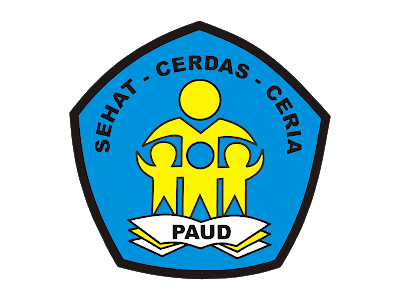
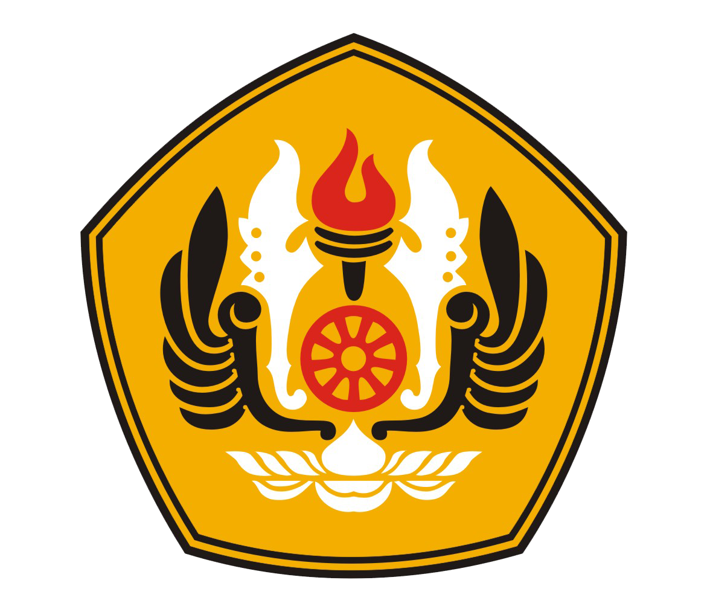

Halo semuanya, kenalin aku!
Sri Mulida Putri Rahayu
Pelajar SMK
Selamat datang di portfolio saya. Di sini saya membagikan informasi tentang diri saya, pendidikan, pengalaman, dan hal-hal yang sedang saya pelajari. Saya percaya bahwa setiap proses, sekecil apa pun, adalah langkah untuk menjadi lebih baik.
Tentang Saya
Bagiku, belajar itu seperti perjalanan kecil yang penuh kejutan. Kadang bingung, kadang salah, tapi tetap seru untuk dijalani.
Portfolio
Pengalaman
Hobi
Riwayat Pendidikan

PAUDKOBER KARYANYATA
2015-2016
 MI
MI
Madrasah Ibtidaiyah
2016-2022
 SMP
SMP
SMPN 4 Gunung Halu
2022-2025
 SMK
SMK
SMKN 1 Rongga
2025-sekarang

UNPADone day di sini,aamiin
Kontak
Email: makewebsricantik@gmail.com
Alamat: Indonesia 🇮🇩